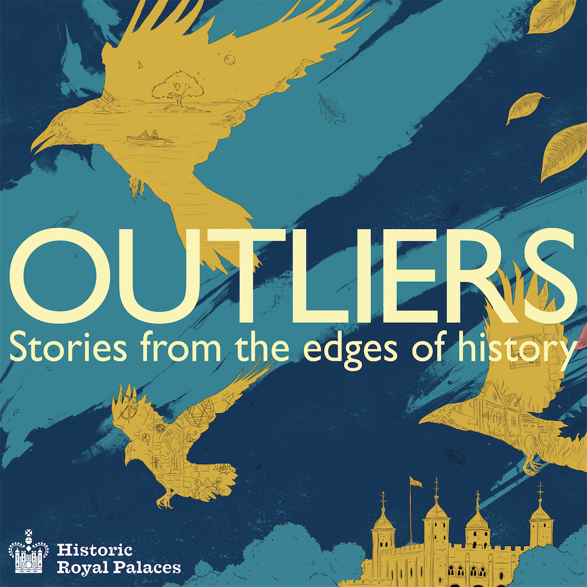

Stellar Firma
Strap in for a hectic ride of semi-improvised Sci-Fi hijinks as Trexel Geistman, Stellar Firma Ltd.’s worst planetary designer, and David 7, his clone assistant, attempt to take listener submissions and craft them into the galaxy’s most desirable bespoke planets to satisfy the whims of the galactic riche.

Outliers
Historic Royal Palaces, in association with Rusty Quill, presents Outliers – a historic fiction podcast. Enjoy a selection of stories from award-winning contemporary writers as they reveal the people hiding in the shadows of real events at some of the greatest palaces ever built.
Rusty Quill Gaming
Join GM Alex as he runs a group of comedians and improvisers through an actual-play tabletop roleplaying campaign using the Pathfinder system. Join Grizzop, Sasha, Hamid, and Azu as they battle and bluster their way through whatever Alex can throw at them.
 The Magnus Archives
One of the foremost centres of supernatural research, the Magnus Institute has appointed a new head archivist in Jonathan Sims. This award-winning horror podcast follows his attempts to put the archives in some kind of order while new supernatural mysteries seems to arise every week…
The Magnus Archives
One of the foremost centres of supernatural research, the Magnus Institute has appointed a new head archivist in Jonathan Sims. This award-winning horror podcast follows his attempts to put the archives in some kind of order while new supernatural mysteries seems to arise every week…
Sandstone
Bering
Space Age
Lychee
#160: The Eye Opens
#159: The Last
#158: Panopticon
RQG 138 - Lightning Boy and the Kobold Killers
Apocalypse World Halloween Special, Part 3
Apocalypse World Halloween Special, Part 2
I.M.O.G.E.N. Internal Log - Filtered partial transcript
Executive Quarterly - Ep 37Q2FD, H. Piltz (ID 63277482)
Exit Interviews of Davids 4-5